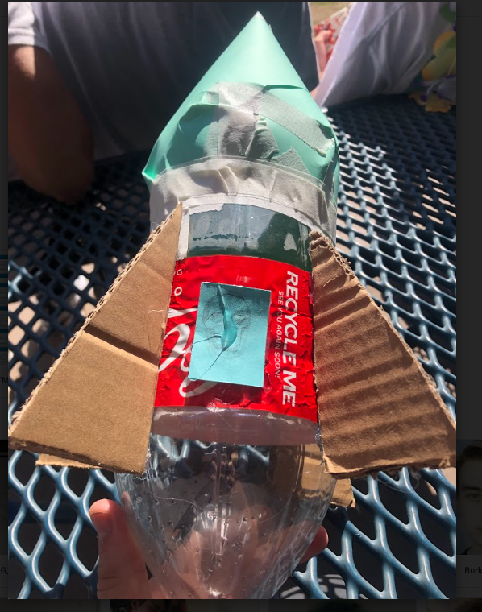

This week i learned that this class wont only be computer stuff but i will be woking in a shop like woodshop but wood and metal. I also learned how to kind of use tinkercad, a website that alows you to create things in 3d.
week 3 journal 10/08/22
This week as a very eventful week because I got Covid-19. This was my first experience with the disease and it affected my presence in this class on Friday. On Wednesday I was able to learn how to push thins from cloud 9 to my website. This was very helpful becuase I was didnt really get how to do it. I also designed my own rube goldberg machine, i did this on paper and then brought it to tinkercad, a 3d bluprint website. Tinkercad helps you dessign things three dimensionally.
Week 4 journal 10/16/22
This week I designed an E on tinkercad because i was still stuck in my house because of Covid but I was able to return the following day on tuesday On Wednesday I worked on our rube goldberg machines and even though i was out, I got a lot of work done. I cut out most of the pieces for our project with a knife and taped them together. We used up most of our time but we almost finished. On Friday, we did a challenge where we tried to make a paper boat to see how long it could last in water with a certain amount of weight. Sadly the boat I made instantly sank. I was a bit sad and dissapointed because I thought it would have held a bit longer than right away.
week 5 journal
This week we worked on and tested our rube goldberg machines. Our design didnt really work the first couple of attempts to pop the balloon with our machine first we saw the slope of the ramp wasnt steep enough and the needle would go in the space between the baloon and the ramp. The car would also spin out of control so we put a wall on both sides to guide the car to the balloon. But even that wasn't enough, so in the end we just bent the needle up bit and sure enough it worked!
week 6 journal
I followed steps on how to disect a computer this week. I did this activity with my seat neighbor Ben. We got were able to disect it but we didnt have enough time to reassemble it. Throughout the process, I got to experience unscrewing bolts off the computer. It has been some time since i have done this. It was also a bit trick to know what specific bolt we needed as we started to put back the computer together.

week 7 journal
this week we learned about bioengineering and how it is applied. I learned that it is used for prostetics and major things like heart transplants which is really cool. Bio engineering is also used to mimic how geckos adapt to their surroundings. Example, a robot lizard was made and it was able to replicate how geckos can cling to the walls. For the project we had to do i designed a tooth implant for a snake. I first researched what tooth implants are usually made of and then sketched some snake fangs to referance for the tinkercad i made.
week 8 journal
Aerospace engineering was the catagory of engineering I learned about this week. There are many aspects of Aerospace where you dont have to necessarily be an engineer to have a job within it. An example of this I can think of is my Dad. He is a machinist who makes the parts. I think i have seen him help tweak the blueprint as well. He also told me he made some parts for the ISS which is pretty cool. I also learned about the fundementals of an aircrafts and the basic forces that would act upon it when in flight. My group and I also started on the rocket project that was assigned.
week 9
This week we finished up our rockets because it was a shorter week. We had our first design, but it was poorly designed. My teamates wanted to cut top of the rocket and put the cone on top of that.I dont remember exactly
what i said but i definitely remeber saying it wasnt the greatest idea. Then on the day we were going to launch, we made a simpler rocket that was closed this time so pressure can build. Ironicly our rocket didnt do so bad and actually gained distance. Most of the other groups barely went or went behind the pump.week 10
This week was honestly somewhat foregetable. i remeber now and i learned about environmental engineering. Specifically how water is cleaned The water we use goes through many filters cleaning out the large, the medium, to the tiny things in water. To test this out we got cut 2 liter coke bottles and put rocks, small rocks and dirt to help filter dirty water. I say that everyone was going starting with cotton, then big rocks,then meduim rocks, small rocks and dirt. I went with dirt at the top, medium rocks,small rocks then cotton, and then large rocks. my water filtered out to be very dirty.week 11
This week we were introduced to electrical engineering. This was a more simpler approach to the math and ideas behind electricity. Last year I took physics and there was way more concepts and math behind it. Though i didnt do as well on the worksheet that was given because i didnt read the problem very well and didnt realize there was multiple batteries in the problem. We also started woring with circut boards but on tinkercad
week 12
We started to actually try to use real life circut boards. It was very exciting when you are able to light up the led light. I did struggle a bit however because I put the direction of the current the wrong way. I tried different types of circuts, first parralel, then series. today right now i am updating my website and did a challenge. It was would you rather take a math class 180 days for 50 min. or count to 1,000,000? I said the math class and that was right but I didnt calculate how long it takes to count to 1,000,000.
week 13
this week Ben and i used circut boards again but this time we coded the rate at which each light turns on and off again. It took a little bit to get the hang of coding the light but once we did it went pretty smoothly. We were able to program it to where it takes a break for a second then each light turns on consecutively.